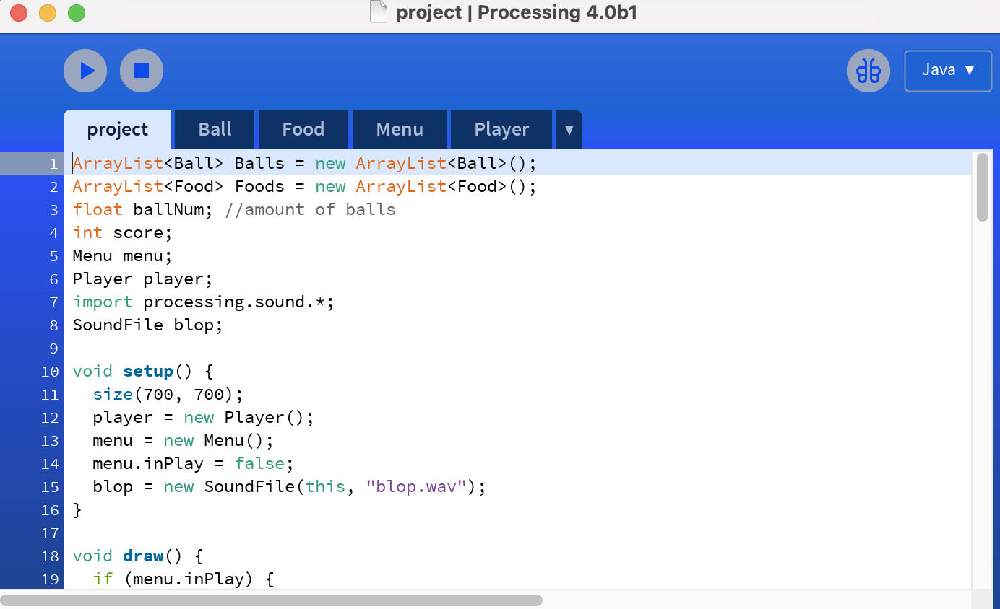
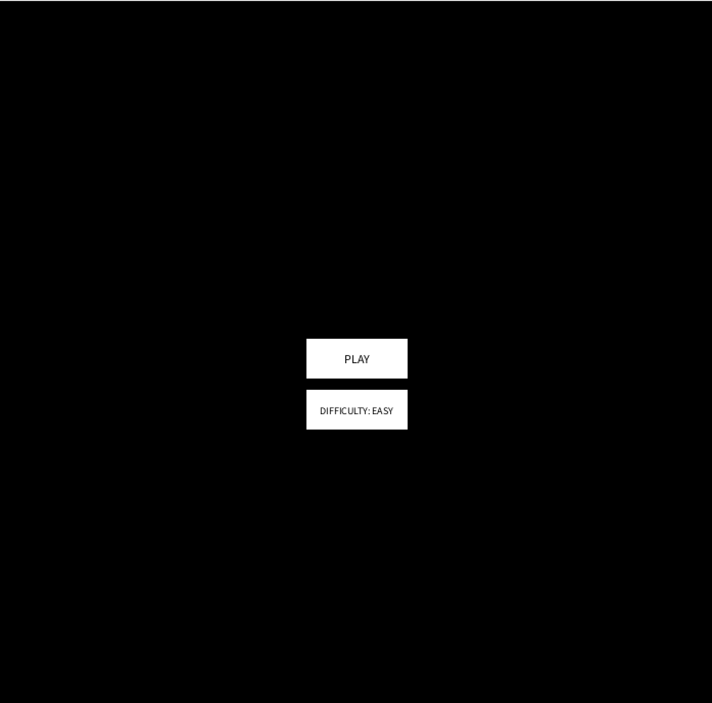
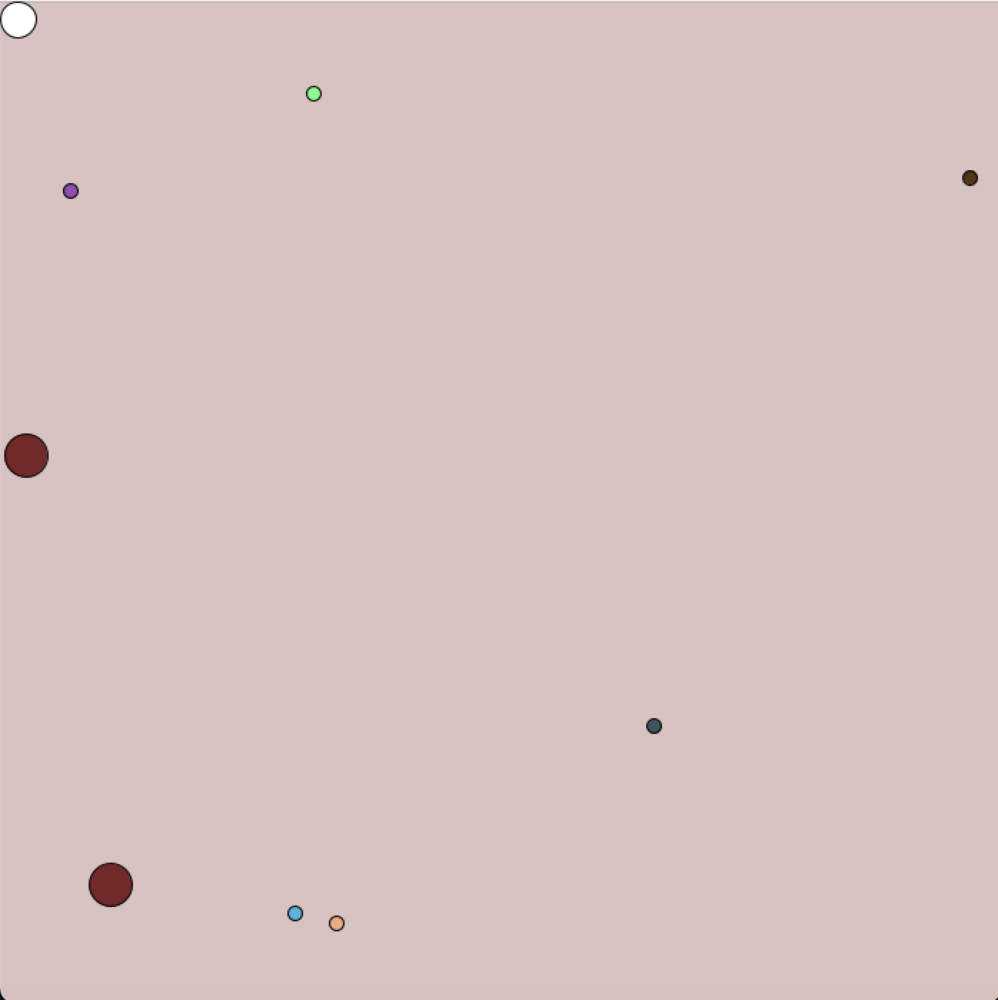

Adnan HabibHi I am Adnan Habib, a undergraduate student here at City University of London, studying computer science. I have always had an interest in programming. I started to code at the age of 13 by learning lua, I then moved on to python where I learnt all the building blocks to a progamming langauge. From there I worked with VisualBasic, html, css and php and now I am learning Java. My hobbies include going to the gym, playing football and reading. |
||
|
|
||
Bootcamp 2020: Processing gameMy first programming project, concluding the 2 week Programming Bootcamp at City (2020). This Processing project demonstrates a comprehensive understanding of the use of arrays, loops, and randomness. I created a small game where you are a small ball and you have to collect as much food as you can while avoiding the bouncing balls. The bouncing balls have a random trajectory and the food respawn in random locations. The score is counted and saved. |
||
|    | ||
Java game projectI created a top down game in java, using the city engine. Here I was exposed to object oriented programming, encapsulation, composition, polymorphism, inheritance, overriding and much more. It was a great oppurtunity to enhance my programming skills and showcase my talents. | ||